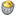
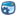
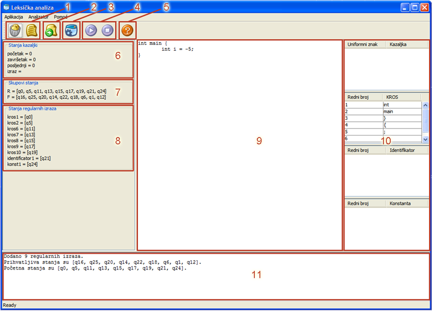
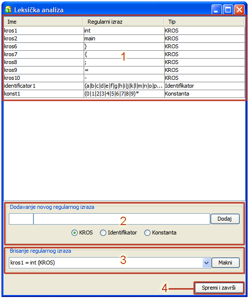

Glavni prozor
- Gumb  ima funkciju brisanja svih podataka (briše sve regularne izraze te sve vrijednosti postavlja na početne. Drugi gumb, , ima funkciju postavljanja svih vrijednosti na pokazne – pokazuju primjer kako program radi.
- Gumb
 otvara novi prozor u koji se upisuju regularni izrazi. Više o njemu u nastavku.
otvara novi prozor u koji se upisuju regularni izrazi. Više o njemu u nastavku.
- Gumb  pokreće leksički analizator te upisani program analizira do kraja.
- Gumb
 pokreće i nastavlja leksičku analizu u načinu rada 'korak po korak', a gumb prekida. Nakon što je leksička analiza završena, potrebno je pritisnuti gumb kako bi program izašao iz načina rada 'korak po korak'.
pokreće i nastavlja leksičku analizu u načinu rada 'korak po korak', a gumb prekida. Nakon što je leksička analiza završena, potrebno je pritisnuti gumb kako bi program izašao iz načina rada 'korak po korak'.
- Pritiskom na gumb
 otvara se pomoć.
otvara se pomoć.
- Na ovom mjestu se ispisuju stanja kazaljki početak, završetak, posljednji i izraz kao što je bilo traženo u tekstu zadatka.
- Ovdje se ispisuju stanja u kojima je trenutačno leksički analizator (R) i prihvatljiva stanja (F).
- Prikazuje koja od stanja, u kojima je trenutačno leksički analizator, pripadaju kojem regularnom izrazu.
- Upisuje se ulazni program koji se leksički analizira. Za vrijeme rada 'korak po korak' nije moguće mijenjati upisane vrijednosti.
- Ovdje se ispisuju rezultati leksičke analize u obliku tablica (tablica uniformnih znakova, KROS znakova, identifikatora i konstanti).
- Tu se ispisuju informacije o obavljenim radnjama.

Prozor za upis regularnih izraza
- Popis upisanih regularnih izraza. U popisu se prikazuje ime, tip i sad regularni izraz.
- Dodavanje novog regularnog izraza se sastoji od upisivanja imena (manja kućica), regularnog izraza (veća kućica), odabira tipa regularnog izraza i pritiska na gumb
Dodaj. Specijalni znakovi su standardni znakovi za regularne izraze: (, ), + i *.
- Brisanje postojećih regularnih izraza je vrlo jednostavno – sastoji se od odabira regularnog izraza i pritiska na gumb
Makni.
- Nakon što je korisnik gotov s upisom regularnih izraza treba pritisnuti gumb
Spremi i završi čime su regularni izrazi spremi za uporabu.
